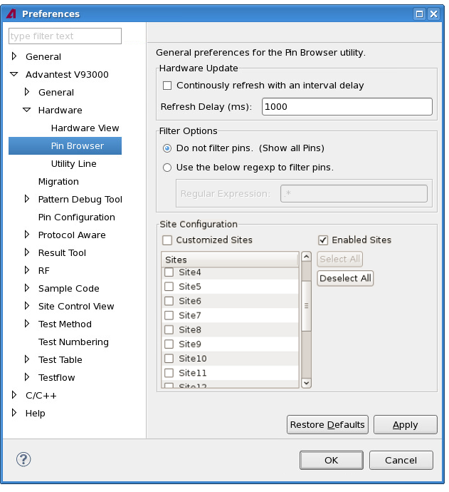

Pin Browser preference page
You can change the following preferences on the preference page.
|
Option |
Description |
|---|---|
|
Hardware Update |
Continuously refresh with an interval delay Select to regularly refresh the hardware information in the Pin Browser view at the specified interval delay. |
|
Refresh Delay The time period used to trigger the refresh of the hardware information in the Pin Browser view. |
|
|
Filter Options |
Do not filter pins (Show all Pins) Select to show all pins in the Pin Browser view. |
|
Use the below regexp to filter pins Select the option and specify a regular expression to show in the Pin Browser view only the pins that match the regular expression (see the description below) . |
|
| Site Configuration | Customized Sites
Select to display only the sites selected in the Sites selection window. You can select or deselect all sites using the Select All and Deselect All buttons or one site at a time using the checkboxes. |
Enabled Sites (default) Select to display all active sites (number of enabled sites in the Site Control Window). |
The following displays the Pin Browser preference page.

Regular Expression
You can filter the pins that are displayed in the Pin Browser by using the regular expression of the system controller operating system.
The following list provides some regular expression meta characters that you may find useful for setting up your filter. You can combine these as needed.
Regular Expression Metacharacter |
Description |
|---|---|
. |
Match any |
* |
0 or more preceding characters |
+ |
1 or more preceding characters |
^ |
Match the beginning of the line |
(abc) |
Characters within the parentheses are treated as a group |
{x,y} |
Between x and y (where x and y represent quantities of characters) |
[abc] |
Any of the characters within the brackets |
[0-9] |
Any decimal digit |
[A-Z] |
Any upper-case letter |
[a-z] |
Any lower-case letter |
[^abc] |
Not any of the characters within the brackets |
a|b |
a or b |
Some examples of regular expression filters and their results are provided in the following table.
Regular Expression Filter |
Result |
|---|---|
digital.* |
Any pin names that contain "digital". |
digital^ |
Any pin names that begin with "digital". |
[^(digital)]* |
Any pin names that do not contain "digital". |
[(101)|(229)]* |
Any pin names that contain "101" or "229". |
[A-Z]{2,4} |
Any pin names that contain a sequence of between 2 and 4 upper-case letters. |
Functional changes
- Introduced in SmarTest 6.5.2